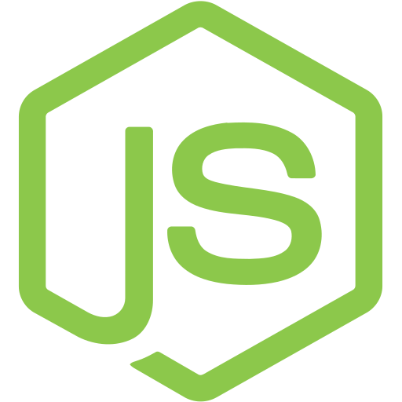
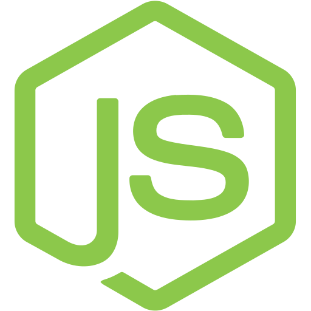
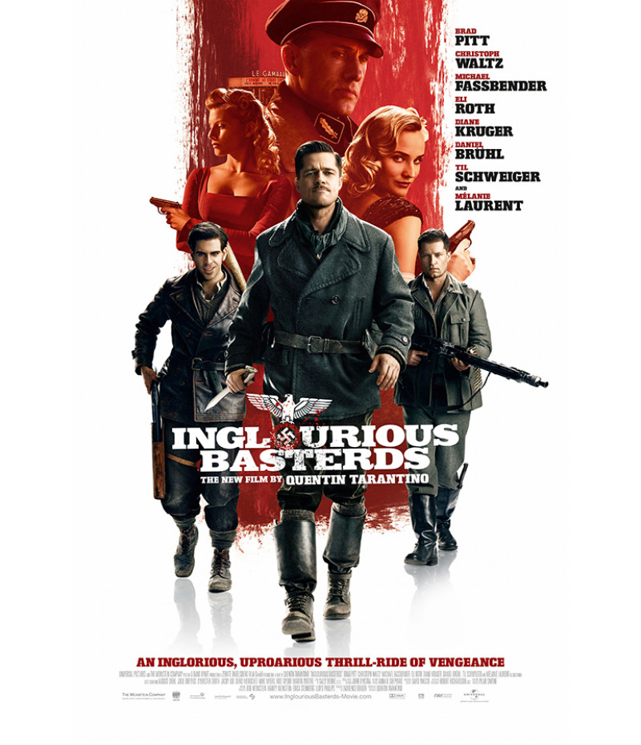
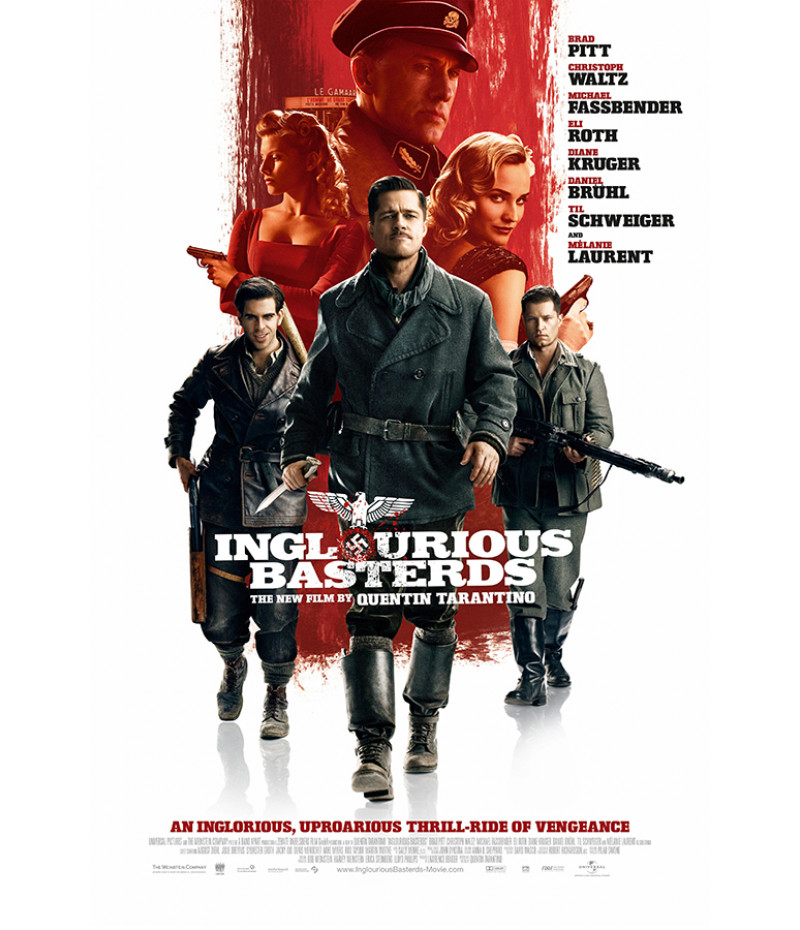
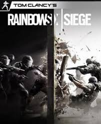
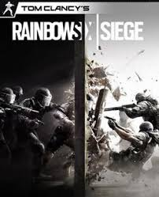
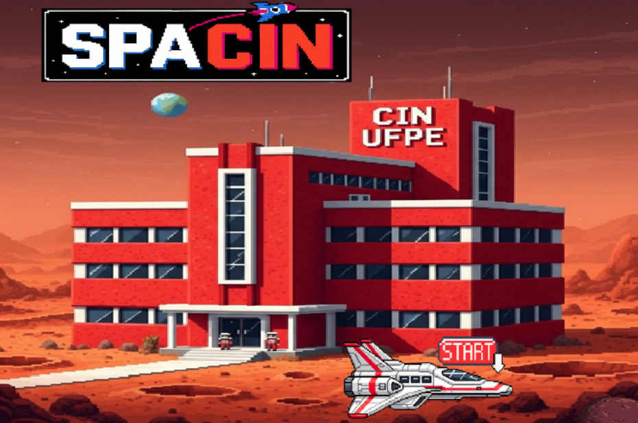
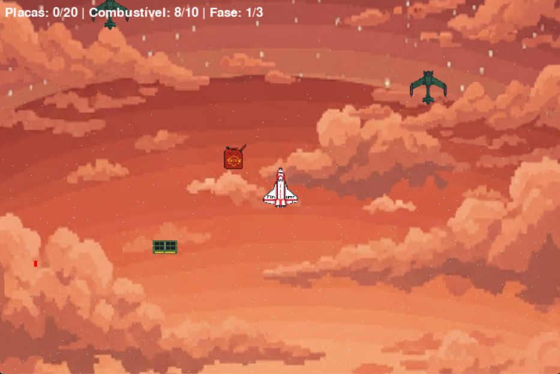
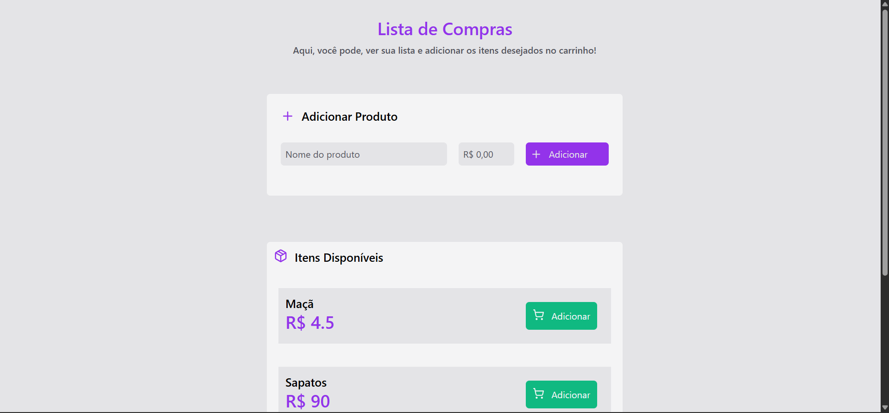
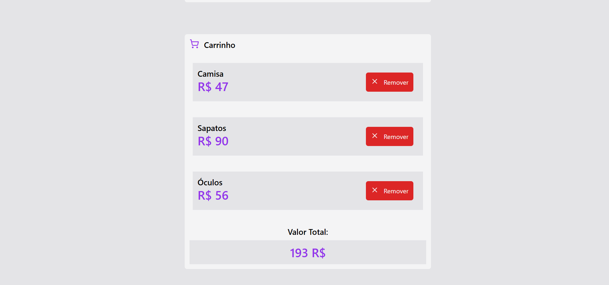

Lucas Carvalho
Estudante de Sistemas de Informação
Sobre mim
Olá! Meu nome é Lucas e sou estudante de Sistemas de Informação na UFPE.
Atualmente, estou estudando Desenvolvimento Web e domino tecnologias como HTML, CSS, React e Node.js. Além disso, também tenho experiência com Python e C++.
Minha principal área de interesse é o Desenvolvimento de Software, e adoro criar soluções que combinam lógica, criatividade e tecnologia.


 

Hobbies
Esportes

Gosto muito da maioria dos esportes, mas sou fã principalmente de futebol (torço para o Maior do Nordeste 🦁) e de basquete
Filmes e Séries
 



Sou fascinado por narrativas que me mergulham em aventuras incríveis.
Meus filmes favoritos são a trilogia de De Volta para o Futuro e Bastardos Inglórios
As séries que eu mais gosto são Breaking Bad 🐐 e Dexter
Jogos

 

Adoro jogos com modo história envolvente, que me permitem explorar
mundos incríveis e seguir narrativas profundas,
como Red Dead
Redemption 2 e Ghost of Tsushima
Mas também curto jogos FPS competitivos, que testam reflexos e estratégia, como Rainbow Six Siege.
Projetos
SpaCIn
 
Este jogo foi desenvolvido para a disciplina de Introdução à
Programação, utilizando Python com a biblioteca Pygame. É um jogo do
estilo
arcade de exploração espacial, onde é necessário coletar
partes de um computador enquanto foge de naves alienígenas
Lista de Compras
 
Esta Lista de Compras foi desenvolvida utilizando React. Nela, é
possível adicionar
itens à lista, ver a lista completa, adicionar itens ao carrinho e
visualizar o carrinho